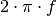
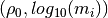

lib_dd package¶
Subpackages¶
Submodules¶
lib_dd.Jacobian module¶
Copyright 2014,2015 Maximilian Weigand
This program is free software: you can redistribute it and/or modify it under the terms of the GNU General Public License as published by the Free Software Foundation, either version 3 of the License, or (at your option) any later version.
This program is distributed in the hope that it will be useful, but WITHOUT ANY WARRANTY without even the implied warranty of MERCHANTABILITY or FITNESS FOR A PARTICULAR PURPOSE. See the GNU General Public License for more details.
You should have received a copy of the GNU General Public License along with this program. If not, see <http://www.gnu.org/licenses/>. Jacobian implementation for a Debye-Decomposition style function Resistivity formulation
- lib_dd.Jacobian.Jacobian(omega, pars, s, partials)[source]¶
Calculate the Jacobian matrix for a given set of parameters m and relaxation times s (
 ).
).Parameters: omega : Angular frequencies 
pars :
 and
and  values in the parmeterisation
values in the parmeterisation(linear,log10) of the provided partials
s: :math:`tau` values in log10 :
partials : List of the four partial derivative functions

Returns: The derivatives of d Re(rho)/d g_i and d -Im(rho)d g_i in form of a :
2*K x P matrix (K = number of frequencies), (P = number of model :
parameters) :
lib_dd.base_class module¶
Copyright 2014,2015 Maximilian Weigand
This program is free software: you can redistribute it and/or modify it under the terms of the GNU General Public License as published by the Free Software Foundation, either version 3 of the License, or (at your option) any later version.
This program is distributed in the hope that it will be useful, but WITHOUT ANY WARRANTY without even the implied warranty of MERCHANTABILITY or FITNESS FOR A PARTICULAR PURPOSE. See the GNU General Public License for more details.
You should have received a copy of the GNU General Public License along with this program. If not, see <http://www.gnu.org/licenses/>.
- class lib_dd.base_class.dd_resistivity_skeleton(settings)[source]¶
Bases: lib_dd.dd_res_data_log10re_mim.add_log10re_mim_derivatives, lib_dd.base_class.integrated_parameters
- Required keys for the ‘settings’ struct:
- Nd frequencies tausel
- check_data_do_we_use_this(rre, mrim)[source]¶
We restrict the fit to positive m values. This implies also positive imaginary parts! Reject a data set if the data mean is negative
Parameters: rre : real part of resistivity/resistance
rmim : negative of imaginary part of resistivity/resistance
Returns: check_passed : [True|False] Return true of no test applied, return
false if the spectrum is not deemed fitable
- determine_tau_range(settings)[source]¶
Return the tau values depending on the settings ‘Nd’, ‘tau_values’ and ‘tau_sel’ in the dict ‘settings’
- Tau values can be set by using one of the following strings in
self.settings[‘tausel’]:
data data_ext factor_left,factor_right ,factor_right factor_left,- Missing values are replaced by one (i.e. the data frequency limits are
- used).
- estimate_starting_parameters_1(re, mim)[source]¶
Heuristic 1 to generate a suitable starting distribution for a fit
TODO: Florsch et al. 2014 has a name for this kind of heuristic...
- estimate_starting_parameters_2(re, mim)[source]¶
Try to find good starting parameters using a gaussian m-distribution.
This should only work well if we have only one peak in the data (imaginary/phase)
- get_data_base_dimensions()[source]¶
Return a dict with a description of the data base dimensions. In this case we have frequencies and re/im data
- get_model_base_dimensions()[source]¶
Return a dict with a description of the model base dimensions. In this case we have one dimension: the DD parameters (rho0, mi) where m_i denotes all chargeability values corresponding to the relaxation times.
- get_synthetic_spectrum(omega, s, rho0, nr_chargeability, strength=10, noise=0)[source]¶
For a given set of frequencies, return re, -im parts of a synthetic debye-spectrum
- get_tau_values_for_data(Nd, factor_left=1, factor_right=1)[source]¶
Return the
 values corresponding to the frequency range of
the data set.
values corresponding to the frequency range of
the data set.Parameters: Nd : number of
values per decadefactor_left : factor to divide to the lower limit by
factor_right : factor to multiply to the upper limit
Returns: tau,s with :math:`s = log_{10}(tau)` :
 ,
,  ,
,
 ,
,  ,
, 
lib_dd.colecole module¶
Copyright 2014,2015 Maximilian Weigand
This program is free software: you can redistribute it and/or modify it under the terms of the GNU General Public License as published by the Free Software Foundation, either version 3 of the License, or (at your option) any later version.
This program is distributed in the hope that it will be useful, but WITHOUT ANY WARRANTY without even the implied warranty of MERCHANTABILITY or FITNESS FOR A PARTICULAR PURPOSE. See the GNU General Public License for more details.
You should have received a copy of the GNU General Public License along with this program. If not, see <http://www.gnu.org/licenses/>.
This is a really old and naive implementation of the Cole-Cole model. Do not change or work with it! It’s only here until we can adapt lib_cc and/or lib_cc2 as replacements.
- lib_dd.colecole.cc_jac(f, par)[source]¶
Wrapper for cc_jac_real which takes a frequency array as large as the output of the cole_real function.
- lib_dd.colecole.cole_log(inputdata, params)[source]¶
compute impedance values (amplitude and phase) from a given set of Cole-Cole parameters at different frequencies.
Parameters: inputdata : array containing the frequency values at which the impedance
values will be computed twice: [frequencies frequencies].
params : array containg the rho0 and an arbitrary number of (m,tau,c)
tuples of the parameters: ln(rho0), m, ln(tau), c. The natural logarithm is used here! rho0 and tau are always positive (in a physical sense). Thus the length of this vector is L = 1 + 3 * N, where N is the number of Cole-Cole terms. m and c are both limited to the range [0,1]
Returns: fitdata : array containing amplitude and phase values for the given
frequencies. The first half of the vector contains the amplitudes (in natural logarithm), the second one the phases, in mRad
lib_dd.dd_res_base_log10rho0_log10m module¶
Copyright 2014,2015 Maximilian Weigand
This program is free software: you can redistribute it and/or modify it under the terms of the GNU General Public License as published by the Free Software Foundation, either version 3 of the License, or (at your option) any later version.
This program is distributed in the hope that it will be useful, but WITHOUT ANY WARRANTY without even the implied warranty of MERCHANTABILITY or FITNESS FOR A PARTICULAR PURPOSE. See the GNU General Public License for more details.
You should have received a copy of the GNU General Public License along with this program. If not, see <http://www.gnu.org/licenses/>.
- class lib_dd.dd_res_base_log10rho0_log10m.dd_res_base[source]¶
Bases: lib_dd.dd_res_base_rho0_m.dd_res_base
Provide forward function and derivatives for the Debye-Decomposition using the parameterization 
- convert_parameters(pars)[source]¶
Convert parameters given as (
 ) to the
parameterisation used by this class.
) to the
parameterisation used by this class.

lib_dd.dd_res_base_rho0_log10m module¶
Copyright 2014,2015 Maximilian Weigand
This program is free software: you can redistribute it and/or modify it under the terms of the GNU General Public License as published by the Free Software Foundation, either version 3 of the License, or (at your option) any later version.
This program is distributed in the hope that it will be useful, but WITHOUT ANY WARRANTY without even the implied warranty of MERCHANTABILITY or FITNESS FOR A PARTICULAR PURPOSE. See the GNU General Public License for more details.
You should have received a copy of the GNU General Public License along with this program. If not, see <http://www.gnu.org/licenses/>.
- class lib_dd.dd_res_base_rho0_log10m.dd_res_base[source]¶
Bases: lib_dd.dd_res_base_rho0_m.dd_res_base
Provide forward function and derivatives for the Debye-Decomposition using the parameterization
- convert_parameters(pars)[source]¶
Convert parameters given as (
) to the
parameterisation used by this class.


lib_dd.dd_res_base_rho0_m module¶
Copyright 2014,2015 Maximilian Weigand
This program is free software: you can redistribute it and/or modify it under the terms of the GNU General Public License as published by the Free Software Foundation, either version 3 of the License, or (at your option) any later version.
This program is distributed in the hope that it will be useful, but WITHOUT ANY WARRANTY without even the implied warranty of MERCHANTABILITY or FITNESS FOR A PARTICULAR PURPOSE. See the GNU General Public License for more details.
You should have received a copy of the GNU General Public License along with this program. If not, see <http://www.gnu.org/licenses/>.
lib_dd.dd_res_data_log10re_mim module¶
Copyright 2014,2015 Maximilian Weigand
This program is free software: you can redistribute it and/or modify it under the terms of the GNU General Public License as published by the Free Software Foundation, either version 3 of the License, or (at your option) any later version.
This program is distributed in the hope that it will be useful, but WITHOUT ANY WARRANTY without even the implied warranty of MERCHANTABILITY or FITNESS FOR A PARTICULAR PURPOSE. See the GNU General Public License for more details.
You should have received a copy of the GNU General Public License along with this program. If not, see <http://www.gnu.org/licenses/>.
lib_dd.int_pars module¶
# -- coding: utf-8 -- Copyright 2014,2015 Maximilian Weigand
This program is free software: you can redistribute it and/or modify it under the terms of the GNU General Public License as published by the Free Software Foundation, either version 3 of the License, or (at your option) any later version.
This program is distributed in the hope that it will be useful, but WITHOUT ANY WARRANTY without even the implied warranty of MERCHANTABILITY or FITNESS FOR A PARTICULAR PURPOSE. See the GNU General Public License for more details.
You should have received a copy of the GNU General Public License along with this program. If not, see <http://www.gnu.org/licenses/>.
Integrated parameters
pars: linear representation of parameters
- lib_dd.int_pars.U_tau(pars, tau, s)[source]¶
compute uniformity parameter similar to Nordsiek and Weller, 2008:

 values can be computed using the
environment variable DD_TAU_X: The string separates the requested
percentages as fractions with ‘;’ characters.
values can be computed using the
environment variable DD_TAU_X: The string separates the requested
percentages as fractions with ‘;’ characters.lib_dd.interface module¶
Copyright 2014,2015 Maximilian Weigand
This program is free software: you can redistribute it and/or modify it under the terms of the GNU General Public License as published by the Free Software Foundation, either version 3 of the License, or (at your option) any later version.
This program is distributed in the hope that it will be useful, but WITHOUT ANY WARRANTY without even the implied warranty of MERCHANTABILITY or FITNESS FOR A PARTICULAR PURPOSE. See the GNU General Public License for more details.
You should have received a copy of the GNU General Public License along with this program. If not, see <http://www.gnu.org/licenses/>.
Functions common to the Debye implementations dd_single, dd_time, dd_space_time.
- lib_dd.interface.aggregate_dicts(iteration_list, dict_name)[source]¶
For a given list of NDimInv iterations, aggregate the dictionaries with name ‘dict_name’ (Iteration.dict_name) and return on dict containing the values of all iterations as lists.
- lib_dd.interface.get_command()[source]¶
Return a string with the full command call, including environment variables.
Environment variables are exported in separate lines
- lib_dd.interface.load_frequencies_and_data(options)[source]¶
Load frequencies and data from options.frequency_file and options.data_file. Apply certain processing steps such as:
- frequency filtering
- magnitude normalization
Parameters: options: object as created by optparse (e.g. provided by dd_single.py or :
dd_time.py)
Returns: data: data dict :
options: the options object can be changed by this function, e.g. when the :
data type is changed.
- lib_dd.interface.prepare_stat_values(raw_values, key, norm_factors)[source]¶
Prepare stat_pars for saving to disc.
This included renormalization or padding for specific keys.
Divide the statistical parameter rho0 by norm_factors and multiply m_tot_n by them.
Returns: values: NxM array, with N the number of spectra, and M the number of :
parameters
lib_dd.main module¶
Copyright 2014,2015 Maximilian Weigand
This program is free software: you can redistribute it and/or modify it under the terms of the GNU General Public License as published by the Free Software Foundation, either version 3 of the License, or (at your option) any later version.
This program is distributed in the hope that it will be useful, but WITHOUT ANY WARRANTY without even the implied warranty of MERCHANTABILITY or FITNESS FOR A PARTICULAR PURPOSE. See the GNU General Public License for more details.
You should have received a copy of the GNU General Public License along with this program. If not, see <http://www.gnu.org/licenses/>.
Jacobian implementation for a Debye-Decomposition style function Resistivity formulation
- class lib_dd.main.dd_resistivity_log10rho0_log10m(settings)[source]¶
Bases: lib_dd.dd_res_base_log10rho0_log10m.dd_res_base, lib_dd.base_class.dd_resistivity_skeleton
- class lib_dd.main.dd_resistivity_rho0_log10m(settings)[source]¶
Bases: lib_dd.dd_res_base_rho0_log10m.dd_res_base, lib_dd.base_class.dd_resistivity_skeleton
- class lib_dd.main.dd_resistivity_rho0_m(settings)[source]¶
Bases: lib_dd.dd_res_base_rho0_m.dd_res_base, lib_dd.base_class.dd_resistivity_skeleton
- lib_dd.main.get(parameterisation, settings)[source]¶
Helper function which returns a resistivity object with the requested parameterisation.
Parameters: parameterisation : [‘rho0m’|’rho0log10m’|’log10rho0log10m’]
settings : setting struct containing various information
Returns: dd_obj: can be used in the inversion module :
lib_dd.plot module¶
Copyright 2014,2015 Maximilian Weigand
This program is free software: you can redistribute it and/or modify it under the terms of the GNU General Public License as published by the Free Software Foundation, either version 3 of the License, or (at your option) any later version.
This program is distributed in the hope that it will be useful, but WITHOUT ANY WARRANTY without even the implied warranty of MERCHANTABILITY or FITNESS FOR A PARTICULAR PURPOSE. See the GNU General Public License for more details.
You should have received a copy of the GNU General Public License along with this program. If not, see <http://www.gnu.org/licenses/>.
- class lib_dd.plot.plot_iteration[source]¶
This class defines an override function for the default plot function of the Iteration class. The new plot function is aware of the Debye Decomposition approach and will plot more information (i.e. the RTD)
In addition, it will renormalise data if necessary.
lib_dd.sample_data module¶
Copyright 2014,2015 Maximilian Weigand
This program is free software: you can redistribute it and/or modify it under the terms of the GNU General Public License as published by the Free Software Foundation, either version 3 of the License, or (at your option) any later version.
This program is distributed in the hope that it will be useful, but WITHOUT ANY WARRANTY without even the implied warranty of MERCHANTABILITY or FITNESS FOR A PARTICULAR PURPOSE. See the GNU General Public License for more details.
You should have received a copy of the GNU General Public License along with this program. If not, see <http://www.gnu.org/licenses/>.
Provide simple functions for sample spectrums
lib_dd.test_functions module¶
Copyright 2014,2015 Maximilian Weigand
This program is free software: you can redistribute it and/or modify it under the terms of the GNU General Public License as published by the Free Software Foundation, either version 3 of the License, or (at your option) any later version.
This program is distributed in the hope that it will be useful, but WITHOUT ANY WARRANTY without even the implied warranty of MERCHANTABILITY or FITNESS FOR A PARTICULAR PURPOSE. See the GNU General Public License for more details.
You should have received a copy of the GNU General Public License along with this program. If not, see <http://www.gnu.org/licenses/>.
- lib_dd.test_functions.assert_single_t_rms_pos_change(rms_old_result, rms_new_result, allowed_percentage)[source]¶
Wrap assertTrue statements around the function
- lib_dd.test_functions.single_t_rms_pos_change(rms_old_result, rms_new_result, allowed_percentage)[source]¶
Process one spectrum as described in the documentation of t_rms_pos_change
Parameters: rms_old_result : list/array with 3 entries containing the RMS-values from
the last recorded dd fit: Overall RMS, Real part RMS, Imaginary part RMS
rms_new_result : list/array with 3 entries containing the RMS-values from
the test dd fit: Overall RMS, Real part RMS, Imaginary part RMS
allowed_percentage : one percentage value for the allowed change
between old and new result.
Returns: rms_within_limit : list with 3 bool entries; True for values within the
allow percentage change, False for a larger deviation
- lib_dd.test_functions.t_rms_pos_change(old_result, new_result, allowed_percentage)[source]¶
Test for positive rms changes
Parameters: old_result: dd directory containing the old run :
new_rusult: dd directory containing the new run :
allowed_percentage: percentage threshold for positive changes. :
If this variable is a list of length three the values will be treated as rms, rms_re, rms_im thresholds
lib_dd.version module¶
Copyright 2014,2015 Maximilian Weigand
This program is free software: you can redistribute it and/or modify it under the terms of the GNU General Public License as published by the Free Software Foundation, either version 3 of the License, or (at your option) any later version.
This program is distributed in the hope that it will be useful, but WITHOUT ANY WARRANTY without even the implied warranty of MERCHANTABILITY or FITNESS FOR A PARTICULAR PURPOSE. See the GNU General Public License for more details.
You should have received a copy of the GNU General Public License along with this program. If not, see <http://www.gnu.org/licenses/>.
Module contents¶
Overview lib_dd package